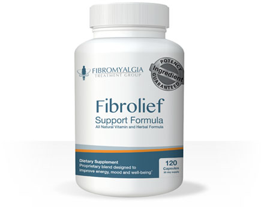
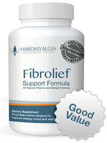
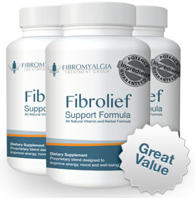
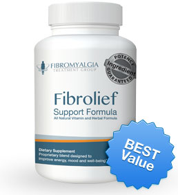

Fibromyalgia breakthrough:
Clinical studies indicate that the ingredients in this formulation are highly effective at reducing the symptoms related to Fibromyalgia
Dear Friend,
In the next few minutes you're going to learn about an all-natural formula with ingredients backed by peer reviewed clinical studies.
I am going to show you how these ingredients have been shown to improve fibromyalgia symptoms and help you return to a normal life.
Here are some of the positive results that our ingredients have achieved for others:
- Reduction of lower back pain, headaches, joint and muscle pain
- Reduced inflammation
- improved energy levels
- increased mental clarity diminishing the effects of fibro fog
- A full nights sleep without waking up groggy
- And it's backed by our 1 year money back guarantee
Cindy Sparling
My name is Cindy Sparling , and I'm the president of Fibromyalgia Treatment Group. We specialize exclusively in the research of natural ways to reduce symptoms related to fibromyalgia.
In fact, we don't offer any products that aren't related to helping those with fibromyalgia. If you too suffer from this disease, you'll want to hear how I overcame my symptoms of fibromyalgia after 4 years of suffering.
I am 52 years old and married with four children, all grown now. I have suffered from migraine headaches for my entire adult life. My husband founded a natural formulation that substantially helped my migraines, and that's when I found out how powerful natural supplementation can be to relieving ailments. It was then that I set my goal to figure out a way to relieve my painful fibromyalgia symptoms. It became the most important project in my life.
My Diagnosis
It all started five years ago when I was involved in a serious rear-end car accident. I was hospitalized, and my recovery took much longer than was expected. I started experiencing serious pain and inflammation which seemed to move throughout my body. I had been experiencing tender spots all over my body, especially my back. I had trouble sleeping.
My energy went away and I was diagnosed with chronic fatigue syndrome. The worst thing that happened was a complete loss of my mental clarity. I seemed to always be in a fog. I went into a serious depression for several years.
I averaged 15 doctor visits every year for the first couple of years, and was hospitalized several times. Some of these doctors even considered me a hypochondriac and discredited many of my symptoms. Years of taking pain medications and antidepressants only seemed to make my condition worse. I was eventually diagnosed with fibromyalgia after being referred to many "experts" and undergoing numberous tests.
"You'll just have to learn to live with it" was my doctor's diagnosis. All he could do for me was prescribe pain medications and antidepressants, which I stayed on for years.
What's more, I hated how the pain killers made me feel , but If I wanted to function I had no choice but to stay on them. Even worse, I lived with it for 4 more years as the disease progressed to a point where I finally became desperate.
I turned to the internet and found that there were alternatives.
My husband had hired several researchers to help him develop his migraine product, and recruited their services to help me find or develop an effective formulation to relieve my fibromyalgia.
First, we researched all the options the medical community had been using for fibromyalgia. Dozens of interviews revealed that most doctors had very limited success with the available options they offer.
We conducted extensive research on all the products that were on the market: prescription, over the counter, and natural supplementation.
Through this process, we concluded that natural supplementation would be the best approach, offering the highest likelihood of success with the least amount of side effects. Options included vitamins, minerals, and plant extracts.
We discovered that some people were finding relief from various supplements, which included: SAMe, Vitamin D, Ribose, Magnesium, B-complex vitamins, Alpha Lipoic Acid, 5-HTP, Melatonin, Turmeric, Boswellia, and a variety of other natural supplements and plant extracts.
We looked at the natural products which were already available and soon discovered that none offered a complete formulation. A combination of many ingredients were known to help sufferers, but in order to maintain that combo one would have to buy an entire stockpile of supplements.
The problem with Fibromyalgia
The problem was that the disease has five basic areas that needed to be addressed. The symptoms that are most prevalent are pain and inflammation, energy, mental clarity, sleep disorders and general biological functions of the body.
It became clear that the best way to attack my condition with natural supplementation was to develop our own formulation that accounted for all the symptoms, with proven clinical results.
My team and I hit the books, diving into every clinical trial conducted throughout the years from all around the world. We tapped into the clinical studies and trials of universities, research scientists, rheumatologists and other specialty doctors. The research they provided helped us discover the most powerful natural ingredients available for aiding in the relief of all the areas of fibromyalgia symptoms, with minimal to no side effects.
A product is born
After over a year of research, interviews, and scientific experimentation, we finally developed a correct formulation of ingredients and found their most bioavailable forms. Through research, analysis and trial and error, we established the most effective serving amounts, all backed by solid clinical studies.
As soon as we knew we had developed the perfect blend, I began taking the formulation myself.
Within a few short weeks my symptoms diminsed considerably. We began sharing the formulatoin with other fibromyalgia acquaintances and they started experiencing the same amazing results!
We soon realized how powerful this formulation could be for helping people who suffer from fibromyalgia, and named the blend Fibrolief.
What Enables The Ingredients In Fibrolief To Be So Effective At Relieving The Pain And Symptoms?
Pain and Inflammation
Turmeric/Curcumin
Turmeric has bee used medicinally for over 2500 years!
Curcumin is a potent anti-oxidant with insanely powerful anti-inflammatory and pain relieving properties. This marvel of nature has virtually no side-effects and offers vast benefits to fibromyalgia sufferers.
Unfortunately, curcumin has long been known to have poor bioavailability, meaning the rate at which it is absorbed is minimal. However, we also include BioPerine(C) in our formula which has been shown to increase the effectiveness by 2000%.
Boswellia AKBA (ApresFlex(C))
Boswellia is a popular herb used for its benefits in fighting inflammation. Its anti-inflammatory effects involve many processes that the body uses to help heal itself, and could correlate to benefiting many chronic illnesses, such as arthritis an fibromyalgia.
It has a long history of use, particularly in India, where it is used in combination with curcumin to relieve arthritis pain. A double-blind, placebo-controlled, cross over stuy concluded that the care of osteoarthritis with this herbomineral formulation reduced the painful symptoms (Kulkarni, RR, 1991).
Boswellia Serrata extract providing Acetyl-11-keto-β-boswellic acid (AKBA) has been shown to increase joint mobility an ease stiff joints. We only use Apresflex(C) which offers highly concentrated levels of AKBA not found in most supplements.
White Willow Bark Extract
White Willow Bark extract contains the active ingredient salicin which is a Cox-1 and Cox-2 inhibitor, an acts as an anti-inflammatory and also reduces pain by inhibiting prostaglandins. Animal experimentation at Cairo University compared willow bark extract to ASA (aspirin), and found that willow bark was equally or more effective as aspirin reducing inflammation; even thuogh the salicin content was lower than an equivalent dose of ASA. It is recommended to take white willow bark instead of aspirin because it is less irritating to the stomach lining.
Celery Seed Extract
Celery seed extract has been used as a pain reliever for arthritis, fibromyalgia and gout. It is known to help reduce muscle spasms and to alleviate painful gas an bloating. It is also known to aid in improving the painful symptoms of fibromyalgia sufferers by reducing inflammation.
Celery seed contains a number of biologically beneficial substance, including flavanoids high in antioxidants, coumarin with anti-coagulating effects, violatile oils ,omega-6 fatty acid linoleic acid, and the powerful healing compound 3-n-butylphthlaide (3-n-B). 3-n-B is extremely effective at reducing the action of the COX-1, COX-2, and 5-LOX pain triggers. In one study of patients with long-term joint discomfort, celery seed helped reduce tenderness and improve flexibility in a remarkable 68% of patients.
Increased Energy
Malic Acid/Malate
Malic acid works with magnesium in the production of ATP, our body's source for energy. In a stuy published in 1992 in the "Journal of Nutritional Medicine," magnesium and malic acid are important for ATP production; the authors further postulate that fibromyalgia symptoms are mostly caused by a deficiency in magnesium and malate, also known as malic acid.
Acetyl-L-Carnitine
Acetyl-L-Carnitine is an amino acid and one of several forms of carnitines at work in your body. Carnitines carry certain fatty foods to mitochondria to be burned as fuels, as well as carrying away the processes' resulting waste products. These carnitine amino acids are protein building blocks that help the body produce energy.
All carnitines are antioxidants, and this particular amino acid has been shown to improve endurance and relieve the fatigure associated with fibromyalgia and celiac disease.
Rhodiola Rosea
This herb is considered an adaptogen, which is a class of herbs said to help build resistance to stress. In herbal medicine, rhodiola is typically used for fatigue, depression, sleep problems, poor attention span and poor memory.
In a 4 week stuy with 82 participants, rhodiola extracts was able to greatly reduced dysfunction and fatigure associated with stress. Significany improvements were noted in social and work function secondary to reduced fatigue and improved mood.
Coenzyme Q10 (CoQ10) A powerful Antioxidant
CoQ10 is a vitamin-like substance that is found naturally in the body. Our bodies' natural production of CoQ10 steadily declines as our age increases, and this deficiency can be compensated with natural CoQ10 supplements.
A recent study by the University of Maryland found that CoQ10 could help reduce damage to the brain caused by stroke, improve energy levels, and increase the body's tolerance to and recovery from exercise.
CoQ10 promotes energy production in the body in the form of ATP. Ninety-five percentof the human body's energy is generated this way. CoQ10 helps convert food into energy and aids in metabolism.
Three different studies have found that using 100mg of CoQ10 a day produces statistically significant results, especially in combination with a daily supplement of magnesium citrate and riboflavin.
Mental Clarity Ingredients:
Bacopa Monniery
Bacopa is a herb long used for memory enhancement, concentration and mental alertness. Several studies indicate that bacopa may help preserve memory and enhance cognitive function.
In a 2008 study of older adults, researchers found that 12 weeks of supplementation with bacopa led to significany improvements in memory, depression, anxiety, and heart rate. In a 2001 stuy of healthy adults, participants showed significant improvements in memory, learning and anxiety.
SAM-e
SAM-e is made from amino acid methionine and ATP. Studies have shown its effective for arthritis pain and shows both analgesic and anti-inflammatory properties.
Europe has had SAM-e available by prescription for many years as an antidepressant, and it has been available over-the-counter in the US since 1996. Dr. Ascanio Polimeni, a renowned physician in Rome, Italy, stated that "... doctors in Europe prescribe SAM-e for the therapy of many conditions, including depression, chronic fatigue syndrome, and fibromyalgia."
The U.S. Department of Health and Human Service commissioned a three-year survey of studies conducted on SAMe. The published report concluded that it is effective for depression and osteoarthritis, without the harmful side effects.
A deficiency in vitamins B12 or folic acid may reduce levels of SAMe in your body, it works best to take all three supplements together or combined.
The University of Maryland Medical Center states, "SAMe can be effective in reducing symptoms of fibromyalgia - including pain, fatigue, morning stiffness, and depressed mood."
Biological Function:
Magnesium
It is estimated that 60%-80% of Americans are deficient in magnesium. This critical mineral is responsible for over 300 enzyme reactions and is found in all of your tissues - but magnesium is mainly prominent and mot important in your muscles, bones, and brain.
Magnesium can be an effective way to combat stress and studies show it improves your sleep. Your cells need magnesium to produce energy. It is necessary for many different chemical pumps to work, to stabilize membranes, and to help muscles relax.
Many people can be sensitive to variou form of Magnesium when they are supplied in high quantities. To counteract any gastrointestinal complications, we use a blend of 5 different forms of magnesium to provide maximum absorption.
SAM-e
SAM-e is made from amino acid methionine and ATP. Studies have shown it is effective for arthritis pain and shows both analgesic and anti-inflammatory properties.
Europe has had SAM-e available by prescription for many years as an antidepressant, and it has been available over-the-counter in the US since 1996. Dr. Ascanio Polimeni, a renowned physician in Rome, Italy, stated that "... doctors in Europe prescribe SAM-e for the therapy of many conditions, including depression, chronic fatigue syndrome, and fibromyalgia."
The U.S. Department of Health and Human Services commissioned a three-year survey of studies conducted on SAMe. The published report concluded that it is effective for depression and osteoarthritis, without the harmful side effects.
A deficiency in vitamins B12 or folic acid may reduce levels of SAMe in your body, it works best to take all three supplements together or combined.
The University of Maryland Medical Center states, "SAMe can be effective in reducing symptoms of fibromyalgia - including pain, fatigue, mmorning stiffness, and depressed mood."
Vitamin D3
Vitamin D3 is crucial for the absorption and metabolism of calcium and phosphorous, which both maintain and strengthen bones and teeth and prevent bone loss and bone disorders. It is an essential ingredient in reducing the symptoms of fibromyalgia.
D3 also protects against muscle weakness and immune system issues. It has been shown to reduce the risk of rheumatoid arthritis in women.
Greg Plotnikoff, MD, senior consultant with the Allina Center for Health Care Innovations in Minnesota published a study in 2003 on 150 people who came to a health clinic complaining of chronic pain. Virtually all of them - 93% - had extremely low vitamin D levels.
Benfotiamine (B1) | Methylcobalamine (B12) | Folic Acid
Fibrolief is loaded with the most bioavailable forms of B vitamins. Some studies have found low levels of vitamin B1 and reduced
activity of some thiamine-dependent enzymes among people with fibromyalgia.
B12 deficiency is usually reported with symptoms of fatigue. Vitamin B12 is essential in converting carbs into glucose in the body.
Sufficient B12 levels are linked to an increase in energy production and a decrease in fatigue and lethargy.
Folic acid is believed to play a part in mood regulation. These B vitamins also help increase the level of SAMe in your body.
We only use the most bioavailable forms of these ingredients and not the cheaper and more common cyanocobalamin (B12) and thiamine (B1).
Stabilized R-Alpha Lipoic Acid
R-ALA is a potent antioxidant that is both fat and water soluble, which improves the function of cell "transporters" that carry and distribute glucose. It is one of the few substances that can cross the blood/brain barrier and pass easily into the brain to go directly where it is needed most.
Most importantly, R-ALA is only antioxidant that has the unique ability to self-regenerate and to also regenerate many other antioxiants, such as B vitamins.
Many studies, doctors, and researches have shown stabilized R-ALA to be up to 12 times more effective than the cheaper S-ALA found in most ALA supplements. B vitamins and R-ALA are absolutely essential ingredients in helping to reduce the symptoms of fibromyalgia and ease nerve pain.
Zinc
Zinc is a mineral that has immune boosting properties and is a powerful antioxidant. Zinc is so important because it is found in every tissue in the body and is directly involved in cell division and studies have shown that low zinc is common in over half of the US population
According to a 2010 study published by the "European Journal of Clinical Nutrition," zinc supplementation may improve mood in women, and may even be effective for depression.
Adequate zinc levels are essential for keeping your immune system strong if you suffer from fibromyalgia.
Black Pepper Bioperine
Bioperine is an extract derived from black pepper and is found to be bioavailability enhancer of a variety of nutrients. It also has immune-suppressing, tumor-inhibiting, and antidepressant effects.
According to an article published in the Journal of Ayruveda and Integrative Medicine in 2010, piperine has been shown to increase the absorption of vitamin C, selenium, beta-carotene, vitamin A, vitamin B-6, and coenzyme Q.
7 Ways We Guarantee That Fibrolief Is The Best Supplement Money Can Buy?
Our manufacturing facility is FDA approved and adheres to Good Manufacturing Practices (GMPs) for supplement manufacturers. Our process guarantees the potency, purity an quality in 10 differeny ways:
- The ingredients we use have been shown to be effective in clinical trials.
- We only accept raw amterials from proven growers and suppliers that we've known and trusted for years.
- All ingredients are lab-tested before mixing, usin NIR (near-Infrared) to ensure their potency, purity and quality.
- All of our ingredients are screened for contaminants including pesticides and metals.
- Our manufacturing process conforms with or exceeds standards set by the U.S. Government. Our facility undergoes 2 audits per year by a 3rd party that certifies that we meet GMP's.
- Each ingredient goes through dissolution and disintegration tests, ensuring that it will be absorbed into your stomach and intestines.
- Every step of our manufacturing process is double checked and signed off by a quality control scientist.
Our Ingredients are Backed by Numerous Clinical Studies ‐ Here Are Just A Few
"Nutritional supplements resulted in a remarkable reduction in initial symptom severity, with continued improvement in the period between initial assessment and follow-up." Dykman KD, Tone C, Ford C, Dykman RA, 1998
"Relative to placebo, 100mg of Boswellia standardized to 30% AKBA was able to reduce joint pain and stiffness on multiple rating scales in persons with confirmed osteoarthritis over 7 days, with maximal effects over 90 days." A double blind, randomized, placebo controlled clinical study, Kulkarni, RR, 1991.
"In one Australian stuy of patients with long-term joint discomfort, celery seed helped reduce tenderness and improve flexibility in a remarkable 68% of patients." University of Queensland, Australia 1991 - 1992.
"These days suggest that Super Malic is safe and may be beneficial in the use of patients with Fibromyalgia." Dept. of Medicine, University of Texas Health Science Center, San Antonio.
"Although this experience deserves further studies, these results indicate that Acetyl-L-caarnite may be of benefit in patients with Fibromyalgia, providing improvement in pain as well as the general and mental health of these patients." Rheumatology Unit, University of Verona, Italy, 2007.
"In a study Nutritional strategies for chronic fatigue syndrome, deficiencies of various B vitamins, vitamin C, magnesium, sodium, zinc, coenzyme Q10 and essential fatty acids, it is likely that marginal deficiencies not only contribute to the clinical manifestations of the syndrom, but also are detrimental to the healing process." UCLA School of Medicine, 2000.
"These results suggest that Rhodiola can reduce general fatigue under certain stressful conditions." Department of Neurology, Armenian State Medical University, Yerevan, 2000.
"S-adenosylmethionine(SAMe) has some beneficial effects on primary fibromyalgia and could be an important option in the use thereof. " Department of Rheumatology, Frederiksberg Hospital, Copenhagen, Denmark, 2001.
"The combined amitriptyline and magnesium citrate combination proved effective on all parameters except numbness. The magnesium citrate was only effective on tender points and the intensity of fibromyalgia." Dept. of Physical Medicine, Acibadem Univ. Meical School, Istanbul, Turkey, 2013.
"The increase in curcumin bioavailability was 2000%. Black Pepper piperine enhances the serum concentration, extent of absorption and bioavailability of curcumin in both rats and humans with no adverse effects." Department of Pharmacology, St John's Medical College, Bangalore, India, 1998.
How Fast Will I see the Results?
Read What Our Satisfied Users Have to Say...
"Finally sleeping through the night"
"I tried your Fibrolief and I'm finally sleeping through the night. Doctors only gave me pain meds and sleep meds and I thought I was losing my mind. The pain throughout my body is mostly gone now, and my energy has returned. Thank you for this product, and I will be a vocal advocate as to it's effectiveness."
Suzanne Lewis - Nampa, Idaho
"I am beginning to enjoy my active life again"
I have been quite distressed with all the body pains and constant fatigue. After working my way through 5 doctors at a major hospital in Reno, I was diagnosed with fibromyalgia. Many of the medications did not help.
Thankfully, I tried Fibrolief. This has been a major factor in dramatically decreasing the pain that I had. My energy has returned and I am again doing the things I love. I am beginning to enjoy my active life again.
Andrea Grogan - Fallon, Nevada
"Within the first two weeks I am noticing improvement"
My doctor told me that my symptoms were all in my head. I had severe chronic fatigue and I could not get out of my mental fog. The pain I was experiencing was excruciating. I started taking your formula and within the first two week I am noticing improvement. My energy is returning and I am now sleeping through the night and waking up refreshed. I will need a new supply and hope to feel continued improvement.
Courtney Jones - Long Beach, CA
"I've experienced very positive results"
I've had very good results with your formula which, although slow to start with, has become very apparent over the last several weeks.
Sandra Locke - Dallas TX
"I love this product"
I became so discouraged at what my doctor kept telling me. He would prescribe anti-depressants and pain killers which almost did me in. I am so happy with Fibrolief, as far as pain goes, has improved dramatically. I love this product and will continue to be a loyal customer.
Peter Hawke - Orlando, FL
"First time in three years that I have felt so hopeful"
I have suffered with fibromyalgia for nearly four years. I was first diagnosed with chronic fatigue syndrome, but after the pain and other symptoms persisted, my doctor finally got the diagnosis right. Everyone around me thought I was some kind of hypochondriac. I was just always sick and tired.
The pain finally started to ease off after taking your product for about six weeks. I will continue using this as it is the first time in three years that I have felt so hopeful. Thank you for helping me.
Barbara McKnight - Des Moines, IA
"It worked for me"
I was diagnosed with fibromyalgia in March of 2010. At that time I was suffering from severe pain and had no energy. I could not get a good night's sleep. I fell into depression which lasted a few years. My doctor prescribed me pain meds and anti-depressants, but they never really helped my condition.
So I looked around on the internet and came across Fibrolief which was a vitamin formula and I wondered what a vitamin can really do. I signed up for the 2 week trial and I did not notice anything durint that time. My doctor said It could take up to three or four months for some vitamins to take effect, so I kept taking them. I did start to notice a difference in about 2 months.
So I would definitely advise anyone with fibromyalgia to give Fibrolief a chance.
Janice Hopkins - Clinton AK
"I have had great success"
It worked great and am happy to report that I have had great success with your product. I will order as needed should my symptoms return.
Marilyn Booth - Savannah, GA
*In accordance with the latest FTC guidelines, we want to make it explicitly clear that the customer letters we have received are based on the unique experiences and circumstances of a few people only. We cannot promise that you will experience similar benefits from using our product. The generally expected performance of our product in regard to any specific disease has not been scientifically valiated and we cannot and will not make any promises in regards to any miracle cures.
Fibrolief Gives You All The Support You Need At A Fraction Of The Cost.
If you tried to purchase the ingredients in Fibrolief individually at a health food store, you could easily spend the following amounts for a 30 day supply.
You could buy all this.
Or this.
Furthermore, it's so much easier to get all of these nutrients in one convenient supplement, rather than taking them separately, and mixing and matching them yourself. You woul have to take over 20 capsules a day, and there is still no guarantee as to potency and absorption.
All the work is already done for you. It's great to know that in these tough economic times, you can count on us to keep this formula convenient and affordable.
Our 1 Year 100% Money Back Guarantee.
We guarantee that if Fibrolief hasn't helped reduce your pain, depression, chronic fatigue, and fibro fog... or you are not fully satified for any other reason (or no reason at all)... you will get 100% of your money back on your most recent order. (Minus the cost of S&H).
That means you can try out Fibrolief at my risk, and request a refund anytime within 1 year of your most recent order!
Look, 30 days from now you can be nothing more than a month older, or you can be taking steps towards improving your well-being, you decide. You have nothing to fear, because you're protected by a full 1 year guarantee.
You have nothing to lose by giving Fibrolief a try. If it doesn't produce results, I honestly want you to ask for your money back. If it does, it will change your life forever.
I Want To Try This for Myself. What Do I Do Next?
To buy all of the ingredients in Fibrolief separately, you would be spending over $221 a month and have to take over 20 capsules per day! Even then, you still wouldn't be able to match our proprietary blend, absorbality, and guaranteed potency.
For a limited time, we will send you a free 2 week supply of Fibrolief and enroll you in our "Preferred Customer Program." You pay only $4.97 to cover shipping and handling.
That's right. You will receive a free trial bottle and membership into our preferred customer program, which qualifies you to receive a full $20 off on all of your future bottles of Fibrolief.
To ensure you don't have to go a day without Fibrolief, you'll automatically receive a fresh bottle every month and your credit card will be billed the preferred member price of $53, plus S&H - not the $73 non-members have to pay. There are no minimum amounts of bottles to buy, and you can pause or cancel your account at any time.
Your trial bottle will give you a full 2 weeks to determine if the product is right for you. At the end of the 2 weeks, if you're not completely satisfied, you can cancel without obligation, and the free sample is yours to keep.
Of course, you can also order a single bottle at our regular price of just $73, or a discounted 3 month supply, without signing up for our Preferred Customer Program with automatic shipments.
Right Now You Have Two Choices...
- You can either continue living with the pain, fatigue and depression that comes with fibromyalgia.
- Or you can take action today, right now, by looking at the research and ingredients in Fibrolief and making the same choice that thousands of our customers have already made.
So order today, right now, while it is still hot on your mind. And be prepared to regain your life. This offer may not last long.
You've Got 3 Options for Ordering:
1 Month Supply
(Good Value)

Rush me a 1 Month Supply of Neuropathy Support Formula.
No automatic shipments.
$73 + (S&H)
Add To Cart3 Month Supply
(Great Value)

3 Month Supply of Neuropathy
Support Formula. Save $60 off Regular Price.
No automatic Shipments.
$210 $159 (Free Shipping)
Add To CartFREE 2 Week Trial
(Best Value)
After the 2 weeks, a 30 day supply will be delivered at the discountd price of $43 each month. I can cancel monthly shipments at anytime.
FREE (Just Pay S&H)
Add To Cart Or Call 888-778-9111 to order by phone
Or Call 888-778-9111 to order by phone
(M-Sat, 7am-6pm MST)
- 100% Money Back Guarantee
 Secure
Secure
Checkout
3 Biggest Reasons Why Many Supplements Don't Work...
1.
A product with only one or two nutrients can't do it all. You can't expect a single nutrient to address the various symptoms associated with fibromyalgia. Fibromyalgia affects the whole body from neutral function to the gastrointestinal tract. It takes a synergistic approach with a variety of targeted nutrients to have any kind of lasting impact.
2.
"Kitchen sink" formulas with low quantities. Some products try to impress with a laundry list of ingredients but when you really take a look, the dosages are so low that they will never have an elicit response.
3.
Using low quality ingredients. Most people don't know this, but there are dozens of forms and potencies of nearly each and every vitamin and mineral on the market. Most products are looking to minimize ingredient costs even if it means using sub par suppliers and poorly absorbed forms of nutrients.
A Few More Reasons To Order Today
World Class
Customer Support
Need help with your order?
Questions about our formula? Our highly trained specialists would love
to hear from you. Contact us anytime by phone or email.
1 Year Money Back Guarantee
Our industry leading money back guarantee covers your most recent order for up to 1 year! They said we were crazy for offering a 1 year guarantee but we stand behind our product. Try Neuropathy Support Formula risk free.
Amazing Customer Testimonials
Every testimonial on our site is a testament to the power of our formula. Don't take our word for it, read through the testimonials to learn how our formula has changed the lives of thousands of people.
Backed By Clinical Studies
Neuropathy Support Formula only uses ingredients backed by clinical studies. You can find information about these studies on our "Clinical Studies" page and we encourage you to learn about the results for yourself.
Manufacturing Audited and Certified by NSF
Our manufacturing facility follows all GMP's and undergoes voluntary 3rd party audits twice a year. Every ingredient is tested for potency and purity before it is mixed and bottled.
Highest Grade Ingredients
Every testimonial on our site is a testament to the power of our formula. Don't take our word for it, read through the testimonials to learn how our fomula has changed the lives of thousands of people.
- 100% Money Back Guarantee
- Secure
Checkout